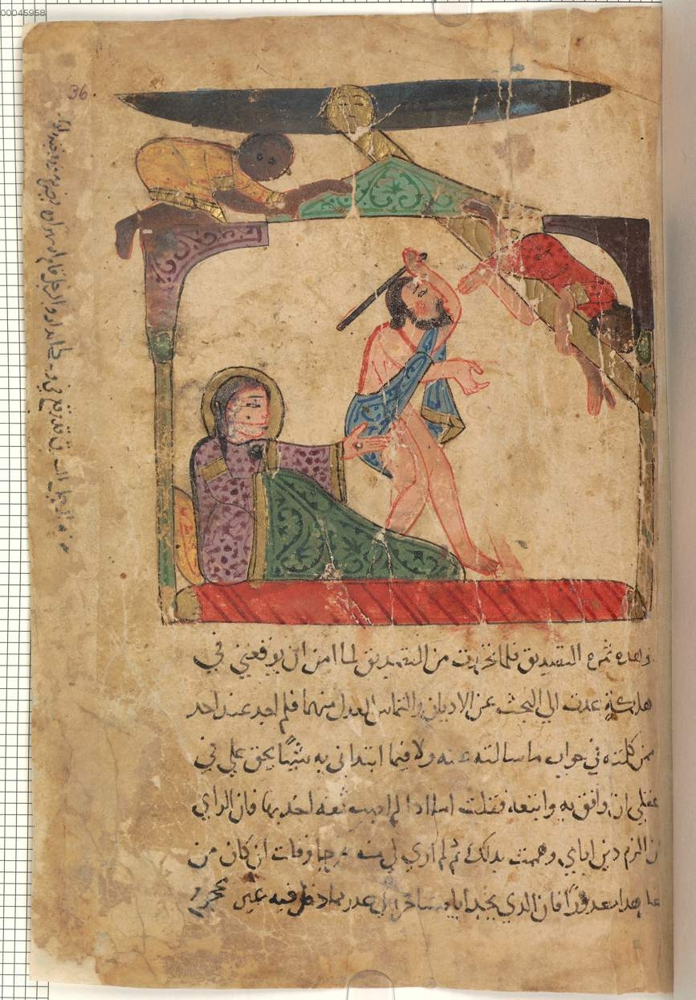
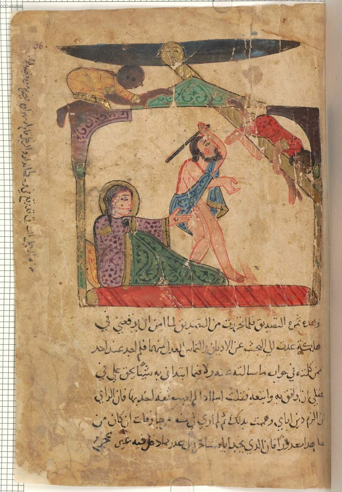

Kalila and Dimna
The Noble Man and the Midnight Robbers
Bayerische StaatsBibliothek
BSB Cod.arab 616 & Illustration 15 and 16
Stephanie Wills
November 15th 2016
A Multimedia Project for
ARTH 370 - Art & Literature of the Islamic World
Dr. Hussein Keshani
Art History & Visual Culture | UBC Okanagan campus
 
